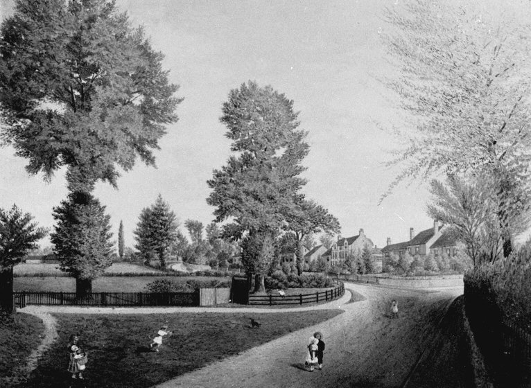

In 1851, following the boom in the watchmaking trade in Coventry and the subsequent overcrowding of the city, 30 acres of prime farmland was bought by the Coventry Freehold Land Society. The land was outside of the city and centred on a farmhouse close to what is now Moor Street, owned by John Moore. From this single building the area grew and spread from 1853 into what is now Earlsdon.
Even after the decline of the watchmaking industry, Earlsdon continued to expand into one of the most favourable residential districts around Coventry. Earlsdon was incorporated into the City in 1890. It was not until 1898, when Albany Road was opened, that development gained pace — the City tramway system was extended along the Butts up Albany Road into the main shopping area, which quickly grew as front rooms of houses became converted into shops.
By 1918, the area was fully developed as it is today and, with little redevelopment, Earlsdon has kept much of its original character.
Source: Albert Smith and David Fry, The Coventry We Have Lost, Simanda Press, Berkswell, 1991

Featured
Earlsdon History Timeline
Follow the story of Earlsdon's development year by year — from farmland to thriving neighbourhood.
Earlsdon People
Notable Residents
Arthur Hutt
War hero and local figure
Charles Johnson
Earlsdon School's first headteacher
David Spencer
Local benefactor
Frank Whittle
Inventor of the jet engine, born in Earlsdon 1907
Frederick Gibberd
Renowned architect and town planner
Earlsdon Watchmakers Trail
Discover the watchmaking heritage on foot
Earlsdon Family History
Tracing family roots in the Earlsdon area
Earlsdon Places
Buildings, Landmarks & Green Spaces
A Brief History of Earlsdon
An overview of the neighbourhood's development
Millennium Heritage Trail
A walking trail through Earlsdon's heritage
Albany Road Railway Bridge
The bridge that helped open up the area
Anarchy Bridge
A local landmark with an unusual name
Earlsdon Avenue Railway Bridge
History of this notable local structure
Earlsdon Library
A community institution with a long history
Earlsdon School
The history of education in the neighbourhood
Edwardian Earlsdon
Life in Earlsdon during the Edwardian era
Hearsall Common
Earlsdon's much-loved green space and its history
Street Views
Historic photographs of Earlsdon's streets
Earlsdon Parish Boundary Walk
A circular walk around the old parish boundary
Do you have historic Earlsdon photos or information to share? We'd love to hear from you.